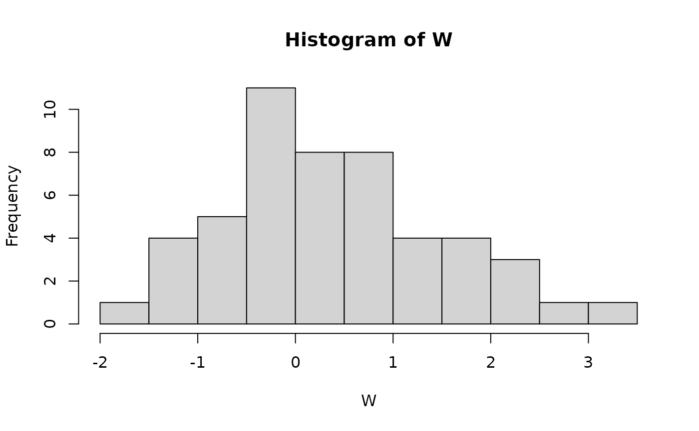
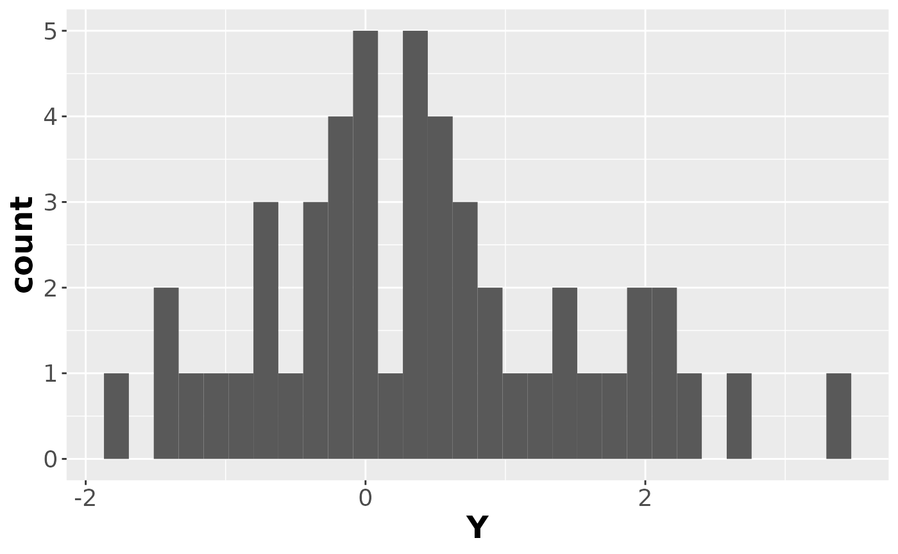
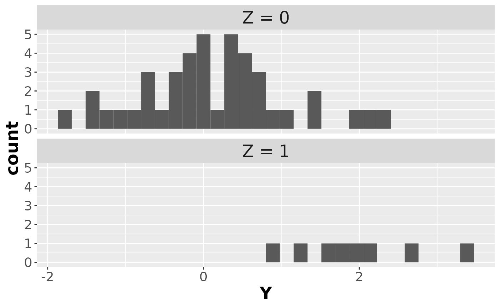
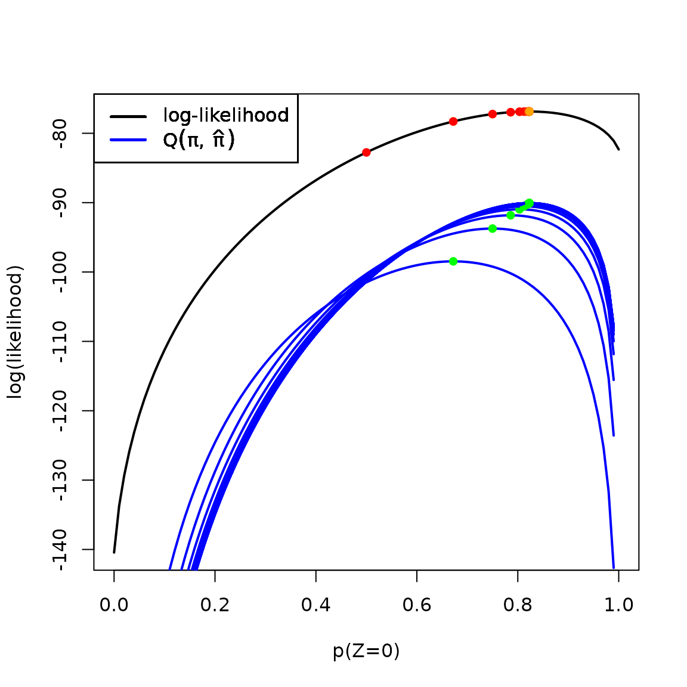

library(EM.examples)
library(ggplot2)
library(dplyr)
#>
#> Attaching package: 'dplyr'
#> The following objects are masked from 'package:stats':
#>
#> filter, lag
#> The following objects are masked from 'package:base':
#>
#> intersect, setdiff, setequal, union
library(pander)Example from McLachlan & Krishnan:
rm(list = ls())
n = 50
mu = c(0,2)
sigma = 1
pi = c(.8,.2)
set.seed(1)
Z = rbinom(n = n, size = 1, p = pi[2]) |> factor(labels = c("Z = 0", "Z = 1"))
Y = rnorm(n = n, mean = ifelse(Z == "Z = 0", mu[1], mu[2]), sd = sigma)
hist(Y, breaks = 10)
data1 = tibble(Z, Y)Here’s the observed data:
ggplot(data1, aes(x = Y)) +
geom_histogram() +
theme(axis.text=element_text(size=14),
axis.title=element_text(size=18,face="bold"))
#> `stat_bin()` using `bins = 30`. Pick better value with `binwidth`.
And here’s the (latent) complete data:
ggplot(data1, aes(x = Y)) +
geom_histogram() +
facet_wrap(~Z, ncol = 1) +
theme(
strip.text.x = element_text(size = 18),
axis.text=element_text(size=14),
axis.title=element_text(size=18,face="bold"))
#> `stat_bin()` using `bins = 30`. Pick better value with `binwidth`.
`p(Y=y|Z=0)` = dnorm(Y, mu[1], sd = sigma)
`p(Y=y|Z=1)` = dnorm(Y, mu[2], sd = sigma)
likelihood = function(pi1)
{
sapply(pi1,
function(x)
{
(x * `p(Y=y|Z=0)` + (1 - x) * `p(Y=y|Z=1)`) |> prod()
})
}
loglik = function(pi1) log(likelihood(pi1))
par(mfrow = c(2,1))
plot(likelihood, xlim = c(0,1), xlab = "pi_1")
plot(loglik, xlim = c(0,1), xlab = "pi_1", ylab = "log(likelihood)")EM Algorithm
`p(Z=0)` = .5 # initial guess for `pi-hat`
diff = Inf
tolerance = .00001
progress = tibble(
Iteration = 0,
`p(Z=0)` = `p(Z=0)`,
loglik = loglik(`p(Z=0)`)
)
max_iterations = 1000
par(mfrow = c(1,1))
plot(loglik, xlim = c(0,1), xlab = "p(Z=0)", ylab = "log(likelihood)", lwd = 2)
for(i in 1:max_iterations)
{
# E step:
Estep = tibble(
Y, # observed data
`p(Y=y|Z=0)`,
`p(Y=y|Z=1)`,
`p(Y=y,Z=0)` = `p(Y=y|Z=0)`*`p(Z=0)`, # `p(Z=0)` = "pi-hat"
`p(Y=y,Z=1)` = `p(Y=y|Z=1)`*(1 - `p(Z=0)`),
`p(Y=y)` = `p(Y=y,Z=0)` + `p(Y=y,Z=1)`,
`p(Z=0|Y=y)` = `p(Y=y,Z=0)`/`p(Y=y)`,
`p(Z=1|Y=y)` = 1 - `p(Z=0|Y=y)` # == `p(Y=y,Z=1)`/`p(Y=y)`)
)
# M step
`pi-hat-prev` = `p(Z=0)` # save the previous pi-hat estimate so we can graph our progress
`p(Z=0)` = mean(Estep$`p(Z=0|Y=y)`) # here's the new pi-hat estimate
Q = function(pi1)
{
sapply(pi1,
FUN = function(x)
{
with(Estep, sum((log(`p(Y=y|Z=0)`) + log(x))*`p(Z=0|Y=y)` +
(log(`p(Y=y|Z=1)`) + log(1-x))*`p(Z=1|Y=y)`))
})
}
# plot(loglik, xlim = c(0,1), xlab = "p(Z=0)", ylab = "log(likelihood)", lwd = 2)
points(x = `pi-hat-prev`, y = loglik(`pi-hat-prev`), col = "red", pch = 16)
plot(Q, add = TRUE, col = 'blue', lwd = 2)
legend(x = "topleft", col = c('black', 'blue'), lty = 1,
lwd = 2,
legend = c("log-likelihood", expression(Q(pi,hat(pi)))))
points(x = `p(Z=0)`, y = loglik(`p(Z=0)`), pch = 16, col = 'orange')
points(x = `p(Z=0)`, y = Q(`p(Z=0)`), col = "green", pch = 16)
diff = `p(Z=0)` - `pi-hat-prev` # this is wrong; should be diff of logliks
new_results = tibble(
Iteration = i,
`p(Z=0)` = `p(Z=0)`,
loglik = loglik(`p(Z=0)`),
`diff(loglik)` = diff)
progress =
bind_rows(progress, new_results)
if(diff < tolerance) break;
}
pander(progress)| Iteration | p(Z=0) | loglik | diff(loglik) |
|---|---|---|---|
| 0 | 0.5 | -82.76 | NA |
| 1 | 0.6721 | -78.3 | 0.1721 |
| 2 | 0.7499 | -77.23 | 0.07779 |
| 3 | 0.7858 | -76.96 | 0.03589 |
| 4 | 0.8035 | -76.89 | 0.01763 |
| 5 | 0.8125 | -76.87 | 0.009062 |
| 6 | 0.8173 | -76.87 | 0.004788 |
| 7 | 0.8199 | -76.86 | 0.00257 |
| 8 | 0.8213 | -76.86 | 0.001392 |
| 9 | 0.822 | -76.86 | 0.0007572 |
| 10 | 0.8224 | -76.86 | 0.0004131 |
| 11 | 0.8227 | -76.86 | 0.0002257 |
| 12 | 0.8228 | -76.86 | 0.0001234 |
| 13 | 0.8229 | -76.86 | 6.75e-05 |
| 14 | 0.8229 | -76.86 | 3.694e-05 |
| 15 | 0.8229 | -76.86 | 2.021e-05 |
| 16 | 0.8229 | -76.86 | 1.106e-05 |
| 17 | 0.8229 | -76.86 | 6.054e-06 |